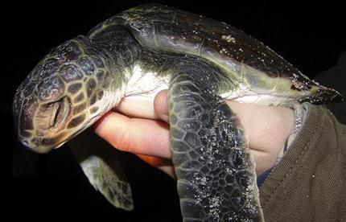
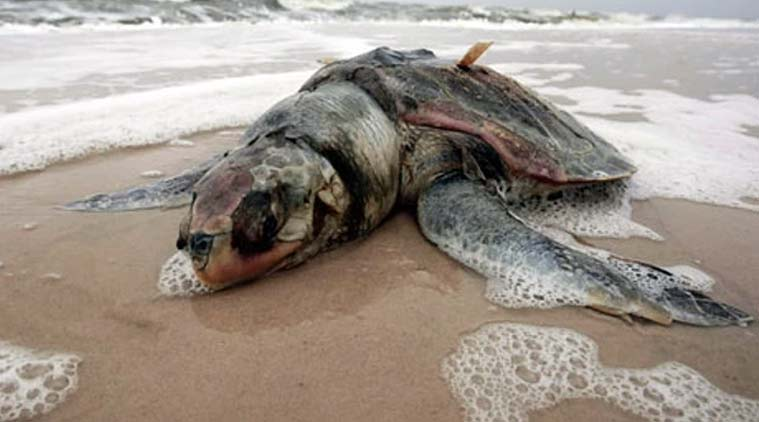
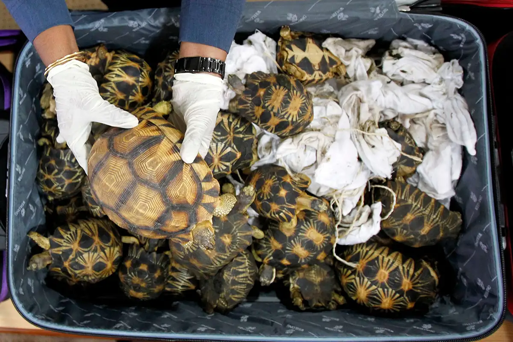

Threats to turtles refer to the various factors and circumstances that put turtle populations at risk and endanger their survival.
These threats can arise from natural causes or human activities and have adverse effects on the overall well-being of turtle species.
Some common threats to turtles include habitat loss and degradation, illegal wildlife trade, pollution, climate change, predation, and incidental capture in fishing gear.
Conservation efforts aim to identify and address these threats to protect turtle populations and ensure their long-term survival.
Threats to turtles
|

Habitat Loss and Degradation: One of the primary threats to turtles is the loss and degradation of their natural habitats. Human activities such as urbanization, deforestation, and agricultural expansion have led to the destruction of critical nesting sites, feeding grounds, and migration routes for turtles. As their habitats shrink or become fragmented, turtles struggle to find suitable areas to lay their eggs, locate food sources, and complete their life cycles. |

Pollution and Climate Change: Pollution, particularly plastic pollution and oil spills, poses a significant threat to turtles. Turtles often mistake plastic debris for food, leading to ingestion and entanglement, which can cause injury, suffocation, or death. Moreover, oil spills can devastate turtle habitats and poison their food sources. Climate change is another major concern as rising temperatures can lead to alterations in nesting beaches and affect the sex ratios of hatchlings. It can also impact the availability and quality of food resources, ultimately endangering turtle populations. |

Illegal Wildlife Trade: Turtles are highly sought after for the illegal wildlife trade, both as pets and for their valuable body parts. Many species of turtles are captured and sold in the exotic pet market, often leading to unsustainable harvesting from the wild. Additionally, turtle shells, meat, and eggs are illegally traded for use in traditional medicine, luxury goods, or as food. This excessive and unregulated exploitation poses a severe threat to turtle populations, driving many species towards extinction. |